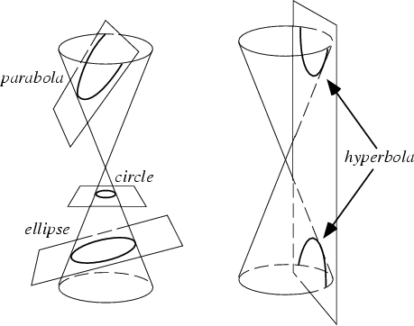

SCALE OF CHORDS
A scale of chords may be used to set or read an angle in the absence of a protractor. To draw an angle, compasses describe an arc from origin with a radius taken from the 60 mark. The required angle is copied from the scale by the compasses, and an arc of this radius drawn from the sixty mark so it intersects the first arc. The line drawn from this point to the origin will be at the target angle.

A conic section is the name given to
any of
the curves in the family containing the
1. circle 2. hyperbola 3. parabola 4. ellipse
These curves represent the locus of the intersection of a cone with a plane, where each curve corresponds to a different orientation of the plane with respect to the cone.